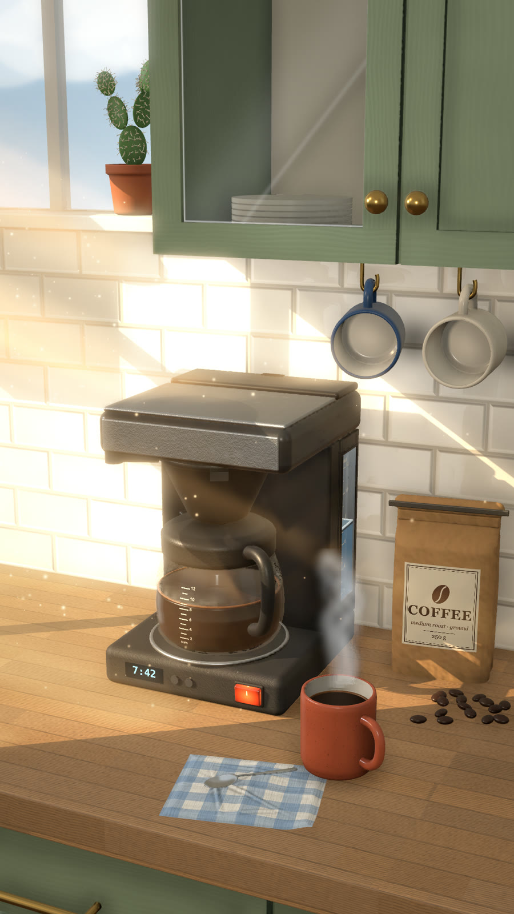
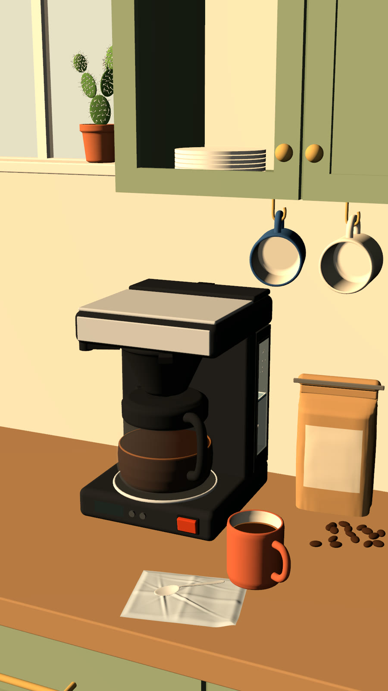
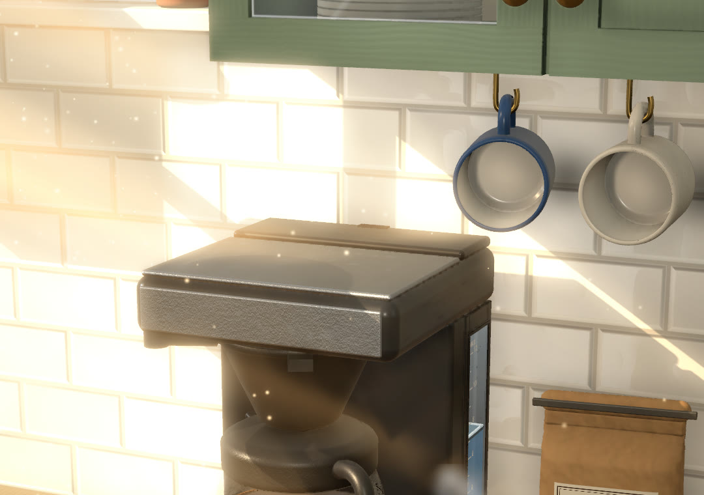
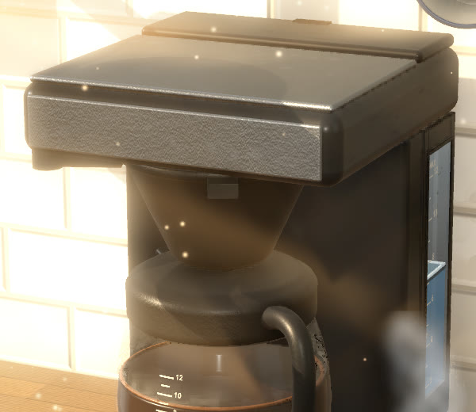
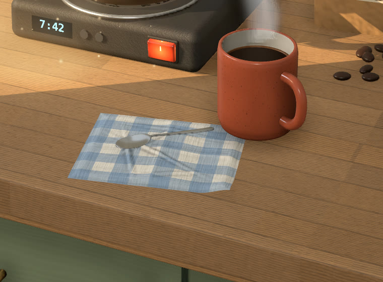
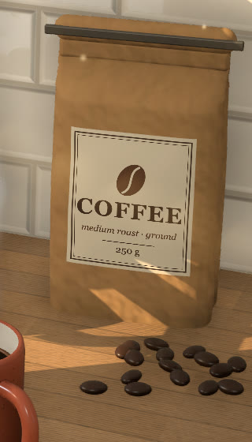
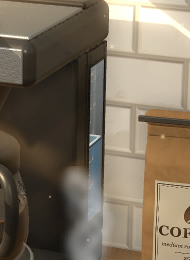
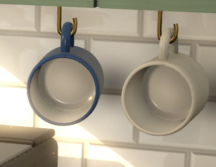
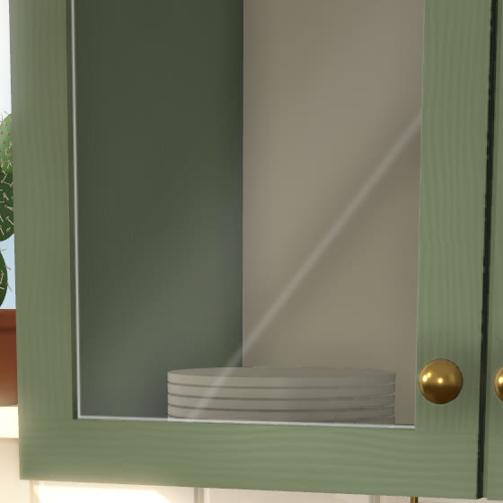

Diese Küche ist kein Foto, und keine Bild-KI hat sie gemalt. Sie ist Code, den Claude Code geschrieben hat. Zieh am Regler: Links ist dieselbe Küche ohne Schatten, Texturen und Lichteffekte. Rechts gelten alle zwölf Regeln.
Das Bild
1.012 Zeilen Code, alle von Claude Code
Gerechnet mit
SceneKit, Apples 3D-Engine
Gilt für
jedes Bild aus Code: Produkt, Raum, Figur


OhneMit den Regeln↔
Gleiche Szene, gleiche Kamera. Links sind Schatten, Texturen und Lichteffekte abgeschaltet.
Vorab
So nutzt du sie
Kopier den Block ganz unten. In Claude Code kommt er in deine CLAUDE.md, in claude.ai in die Projekt-Anweisungen. Dann gelten die Regeln in jedem Chat.
Lass Claude dein erstes Bild rendern. Das Motiv ist egal: Produkt, Zimmer, Figur.
Schau dir Ausschnitte an und sag in deinen Worten, was dich stört. „Das Wasser ist nur ein blauer Strich“ reicht. Die Ursache sucht Claude selbst.
Regeln 1–3
Licht
Das Licht entscheidet, ob ein Bild echt wirkt. Es kommt vor allem anderen.
01Ein Licht, das es wirklich gibt
Das Hauptlicht braucht eine Quelle, die man versteht: die Sonne durchs Fenster oder eine Lampe. Dann zeigen alle Schatten in dieselbe Richtung. Licht von der Kamera aus macht alles flach.
Sag Claude
„Das Hauptlicht ist die Sonne durchs linke Fenster. Kein Fülllicht von der Kamera aus.“

Die Sonnenflecken auf den Fliesen zeigen, woher das Licht kommt.
02Schatten sind nie schwarz
Auch in den Schatten fällt noch Licht. Kühles Licht kommt vom Himmel, warmes von hellen Flächen in der Sonne. Ohne dieses Licht sehen Schatten aus wie Löcher.
Sag Claude
„Die Schattenseite bekommt kühles, weiches Licht vom Fenster. Dazu kommt ein schwacher, warmer Bounce von den sonnigen Flächen.“
03Licht sieht man in der Luft, aber leise
Lichtstrahlen und ein paar Staubkörner zeigen, dass Luft im Raum ist. Der Staub bleibt weich und dunkel. Helle Punkte mit Leuchten sehen aus wie Glitzer.
Sag Claude
„Weiche Lichtstrahlen durchs Fenster. Staub nur als dunkle, weiche Flecken, ohne hellen Kern.“

Die Strahlen sind schwach, der Staub ist nur angedeutet.
Regeln 4–7
Oberflächen
Perfekt glatte Flächen verraten den Computer sofort.
04Nichts ist perfekt
Echte Dinge werden benutzt. Holz hat Abrieb an den Kanten, Metall hat Fingerabdrücke. Fliesen sitzen ein kleines bisschen schief. Diese Spuren machen ein Bild glaubwürdig.
Sag Claude
„Jede Fläche bekommt Gebrauchsspuren: Abrieb, Flecken, ungleichmäßiger Glanz.“

Die Arbeitsplatte hat Maserung, Abrieb und einen ungleichmäßigen Glanz.
05Jedes Material hat drei Schichten
Farbe allein reicht nicht. Jedes Material braucht dazu ein Relief (Normal Map) und einen Glanz (Roughness). Holz bekommt eine Maserung, Papier Knicke und Stoff eine Webung.
Sag Claude
„Jedes Material bekommt eine Farb-, eine Relief- und eine Glanz-Textur.“

Kraftpapier mit Knicken, Falz und Etikett.
06Texturen in echter Größe
Eine Textur muss zur echten Größe der Fläche passen. Sonst wird sie gestreckt und zieht Streifen. Stell sie deshalb auf Wiederholen. Details unter zwei Pixeln im fertigen Bild sieht keiner.
Sag Claude
„Skalier Texturen nach der echten Länge der Fläche und stell sie auf Wiederholen. Details mindestens zwei Pixel groß.“
07Alles braucht Tiefe
Was nur als Farbfläche aufgemalt ist, wirkt wie ein Aufkleber. Das gilt für Wasserstände, Anzeigen und Schalter. Tiefe heißt: eine Vertiefung, ein Volumen dahinter und eine eigene Oberfläche. Dazu kommt eine Kante, wo es an die Wand stößt.
Sag Claude
„Nichts als flache Leuchtfläche. Fenster und Anzeigen bekommen eine Vertiefung, ein Volumen und einen Rand.“

Das Wasserfenster ist eine Vertiefung mit echtem Wasser und einer Skala auf der Scheibe.
Regeln 8–10
Form
Wie Dinge gebaut sind und wie sie zueinander stehen.
08Rund bleibt rund
Was in echt gebogen oder weich ist, bekommt Kurven statt Kanten: Henkel, Tücher, Tüten. Jeder Gegenstand ist ein Stück. Ein Löffel aus zwei zusammengesteckten Teilen fällt sofort auf.
Sag Claude
„Bau gebogene Dinge als glatte Kurven. Jeder Gegenstand ist ein Stück.“
09Wo Dinge nah sind, wird es dunkel
Wo sich zwei Dinge berühren oder fast berühren, kommt weniger Licht hin. Das gilt für die Tasse am Haken, die Tüte an der Wand und die Falten im Tuch. Ohne diese Kontaktschatten schwebt alles.
Sag Claude
„Kontaktschatten hinter und unter jedem Gegenstand. Kleine Falten bekommen eine eingebackene Verschattung.“

Hinter den Tassen ist die Wand dunkler.
10Glas gibt nur Licht dazu
Klares Glas ist eine ganz leichte Tönung mit hellen Reflexen. Graue oder weiße halbdurchsichtige Schichten machen es schmutzig. Spiegelt sich der dunkle Raum frontal darin, wirkt es wie Rauchglas.
Sag Claude
„Glas bekommt eine leichte Tönung und Glanzlichter, die nur Licht dazugeben. Keine frontale Spiegelung des Raums.“

In der Schranktür sieht man nur einen schwachen Streif und die Kante.
Regeln 11–12
Prüfen
Die meisten Fehler sieht man erst beim zweiten Blick.
11Nichts steckt ineinander, nichts flackert
Gegenstände dürfen sich berühren, aber nicht durchdringen. Liegen zwei Flächen genau aufeinander, flackern sie im Video. Der Rechner weiß dann nicht, welche vorne ist.
Sag Claude
„Prüf, dass nichts ineinander steckt und keine zwei Flächen genau aufeinander liegen.“
12Zweimal rendern, dann reinzoomen
Rechne dasselbe Bild zweimal. Sieht es verschieden aus, stimmt etwas nicht. Prüf danach Ausschnitte statt nur das ganze Bild. Die meisten Fehler zeigen sich erst beim Reinzoomen.
Sag Claude
„Rendere das Bild zweimal und vergleiche. Dann zeig mir Ausschnitte von jedem Gegenstand.“
Zum Kopieren
Alle 12 Regeln in einem Block
In deine CLAUDE.md oder in die Projekt-Anweisungen.
3D-Regeln · CLAUDE.md
# 3D-Regeln für jedes Bild, das du mit Code renderst
## Licht
1. Ein Hauptlicht mit echter Quelle (Sonne durchs Fenster, eine Lampe). Kein Fülllicht von der Kamera aus. Alle Schatten zeigen in dieselbe Richtung.
2. Schatten sind nie schwarz: kühles, weiches Licht von der Fensterseite, dazu ein schwacher warmer Bounce von den sonnigen Flächen.
3. Licht in der Luft zeigen: weiche Lichtstrahlen. Staub nur als dunkle, weiche Flecken ohne hellen Kern und ohne Glow.
## Oberflächen
4. Nichts ist perfekt: jede Fläche bekommt Gebrauchsspuren (Abrieb an Kanten, Fingerabdrücke, Flecken, ungleichmäßige Rauheit, Fliesen minimal schief).
5. Jedes Material hat drei Schichten: Farbe, Relief (Normal Map) und Glanz (Roughness). Holz mit Maserung, Papier mit Knicken, Stoff mit Webung.
6. Texturen nach der echten Größe der Fläche skalieren und auf Wiederholen stellen. Details mindestens 2 Pixel groß im fertigen Bild.
7. Nichts als flache Farb- oder Leuchtfläche aufmalen (Anzeigen, Wasserstände, Schalter). Tiefe = Vertiefung, Volumen, eigene Oberfläche, Kante zur Wand.
## Form
8. Was in echt gebogen oder weich ist, bekommt glatte Kurven (Henkel, Tücher, Tüten). Jeder Gegenstand ist ein Stück, nicht zusammengesteckt.
9. Kontaktschatten überall, wo sich Dinge berühren oder nah sind (Tasse am Haken, Tüte an der Wand, Falten im Stoff). Kleine Falten bekommen eingebackene Verschattung.
10. Glas: leichte Tönung plus Glanzlichter, die nur Licht dazugeben. Keine grauen oder weißen halbdurchsichtigen Schichten, keine frontale Spiegelung des Raums.
## Prüfen
11. Nichts steckt ineinander, nichts schwebt. Keine zwei Flächen genau aufeinander (die flackern im Video).
12. Jedes Bild zweimal rendern und vergleichen. Dann Ausschnitte von jedem Gegenstand prüfen, nicht nur das ganze Bild.
Vier Fallen, falls Claude mit SceneKit rendert
Texturen stehen am Anfang nicht auf Wiederholen. Dann wird die letzte Pixelreihe über die Fläche verschmiert. Setz wrapS und wrapT auf .repeat.
Ein Objekt bekommt höchstens acht Lichter. Sind es mehr, fällt bei jedem Render ein anderes weg. Genau das findet Regel 12.
Ein Flächenlicht (.area) zeichnet sein Rechteck ins Bild, solange drawsArea nicht false ist.
Glas als PBR-Material mit wenig transparency kam bei mir undurchsichtig heraus. Mit Blinn und Reflexion blieb es klar.
Mehr von anstatt.
Schick mir dein Bild
Wenn du mit diesen Regeln renderst, will ich das Ergebnis sehen. Wie ich meine Link-Seite mit Claude Code gebaut habe, steht in meiner zweiten Gratis-Anleitung.